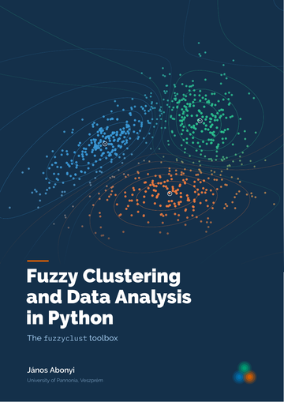

The book#

Fuzzy Clustering and Data Analysis in Python: The fuzzyclust toolbox is the companion book of the package. It develops every algorithm in one notation, keeps theory and experiments apart, and illustrates each method with the scripts of the example gallery, so the book, the documentation and the code show the same results. The book is published under the CC BY 4.0 license.
Read it online, with a link to Google Colab next to every figure computed by an example script, or download the PDF (384 pages) or the EPUB for e-book readers. All three editions are generated from the same LaTeX source. Both files of each version are also attached to its GitHub release.
Contents#
Introduction: what clustering is for, the lineage of the toolbox, a first session
Foundations: data, norms, partition spaces, prototypes, alternating optimization, the API
Partitioning algorithms: k-means, k-medoids, fuzzy c-means, Gustafson–Kessel, Gath–Geva, generalized fuzzifiers, subtractive clustering
Cluster validity: sixteen indices, scans over the number of clusters, fuzzy Rand indices, stability, cluster merging
Visualization: PCA, Sammon mapping, fuzzy Sammon mapping, projection quality, fuzzy SOM
Robust and shape-oriented variants: possibilistic, noise, kernel, c-varieties, c-shells, volume prototypes, feature weighting
Graph-based fuzzy clustering: minimal spanning trees, geodesic distances
Clustering for model identification: Takagi–Sugeno models, fuzzy c-regression, fuzzy classifiers, fuzzy partitions for trees, hinging-hyperplane trees
Clustering of time series: segmentation, model order selection, state-space reconstruction and prediction, structure selection
Relational and mixed data: relational FCM, NERF c-means, fuzzy c-medoids, categorical and mixed attributes, time series as objects
Incomplete, very large, and image data: missing values, sampling and streaming FCM, spatial FCM for images
Beyond a single unsupervised run: partial supervision, pairwise constraints, co-clustering, collaborative clustering, ensembles
Appendices: API reference tables, migration from the MATLAB toolbox, catalog of the example scripts.
The PDF is built from the book/ directory of the repository with
book/build.sh.